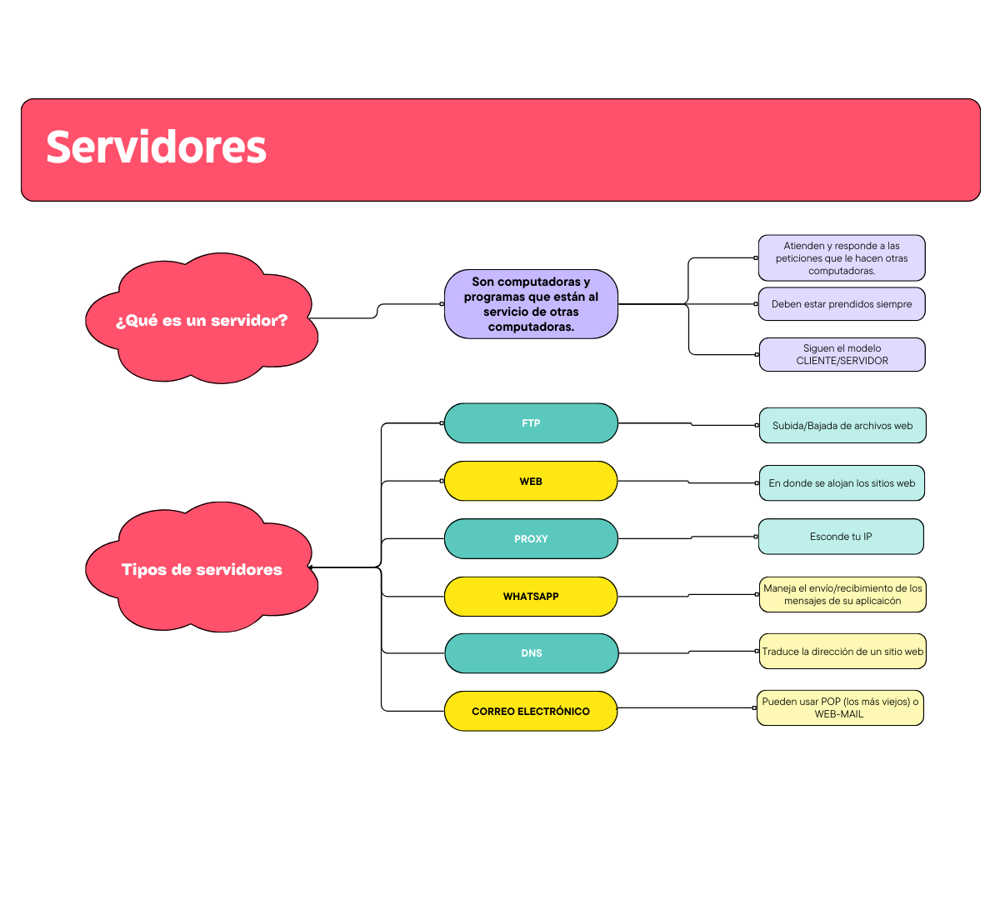

Introducción
Dentro de la materia "Estructura y Funcionamiento de los Sistemas Informáticos II", pudimos abarcar diversos temas:
Compuertas Lógicas
Las compuertas lógicas son dispositivos que operan con estados lógicos y funcionan igual que una calculadora. Cada una de las compuertas lógicas se las representa mediante un Símbolo, y la operación que realiza (Operación lógica) se corresponde con una tabla, llamada Tabla de Verdad. Hay varios tipos de compuertas lógicas:
- Not
- And
- Or
- Nand
- Nor
Redes Informáticas
Realizamos múltiples cuadros referentes a los componentes, características, topologías, tipos de servidores, protocolos, el hardware, el software, etc. de las Redes Informáticas. Uno de ellos es:

Servidores Google
Realizamos un TP basado en un video mostrando los servidores de Google sobre éstos:
Internet
Vimos las características del Internet, su surgimiento y sus componentes.

Servidores
Estudiamos los servidores y sus distintos tipos.
Sistemas Operativos
Realizamos un cuadro sinóptico sobre los sistemas operativos y sus características.